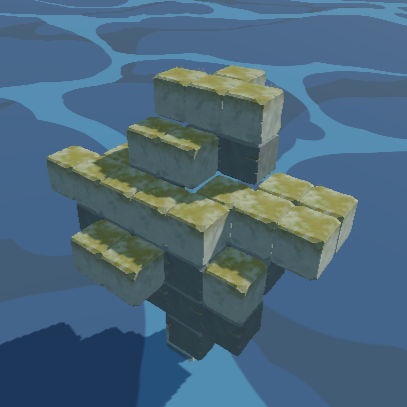

Projects
Games
Tower of Genn
Programming Lead
A tower building puzzle game created using Godot and gdscript in a team of around 20 people from UC Irvine.
Bubblebound
Programming Lead
A puzzle adventure game where players utilize different types of fish to complete puzzles. Created using Godot and gdscript in a team of 14 people.
Helping Biodiversity in the Ocean
Game Programmer
An educational visual novel designed to help teach people how their decisions impact ocean life. Created in a team of 5 using Unity and C#.
Other Projects
Electronic Drum
Designed an Electronic Drum using a Capacitive Sensor as an exhibit for the Sacramento Children's Museum. Created in a team of 2
Exam Study Tool
Designed a simple program in Python to motivate me to study textbook practice problems by randomly selecting a problem to practice and setting a time limit to complete it under.